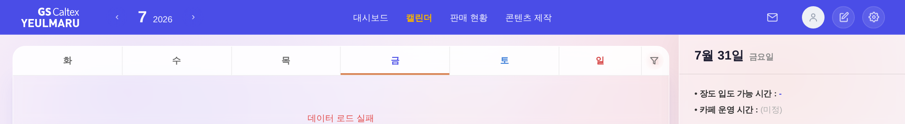
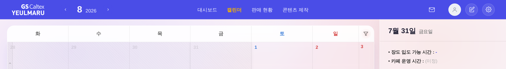
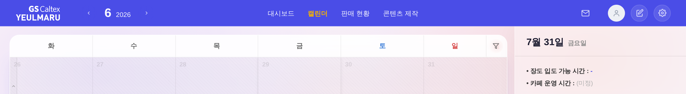

① 시작

② 휠 아래로 1번 → 그대로 7월

③ 휠 위로 2번 → 그대로 7월

file://index.html 부팅 후 캘린더 모드 전환 →
캘린더 한가운데에 커서를 두고 mouse.wheel 실제 발생) · 화면 = 상단 nav 월 표시(#nav-month / #nav-year) 영역
| 조작(캘린더 위 커서) | 전 | 후 |
|---|---|---|
| 시작 상태 | 2026년 7월 | 2026년 7월 |
| 휠 아래로 1번 | 2026년 7월 (변화 없음) | 2026년 8월 (다음 달) |
| 이어서 휠 위로 2번 | 2026년 7월 (변화 없음) | 2026년 6월 (이전 달) |
| 12월에서 아래로 | — | 다음 해 1월 (연도 넘김 정상) |
| 트랙패드 미세 스크롤(6px×3) | 변화 없음 | 변화 없음 (오작동 방지) |
① 시작

② 휠 아래로 1번 → 그대로 7월
③ 휠 위로 2번 → 그대로 7월
① 시작

② 휠 아래로 1번 → 8월

③ 휠 위로 2번 → 6월

changeMonth 바로 아래 1블록)changeMonth(±1)과 기존 월 전환 애니메이션(_calAnimateOnNextRender)을 그대로 호출한다. 화면에 새로 그려지는 요소가 없어 tools/check_design.py 기준 변동 없음(통과).#cal·#cal-head-wrap에만 wheel 리스너(passive:false). 요소 자체에 붙어 renderCal의 innerHTML 교체에도 살아남고, 모달·사이드패널·판매 레일 위 스크롤은 애초에 이 리스너를 타지 않는다.#app.biz-mode(사업현황 모드 = 월 축 아님, 기존 .nav-mnav 클릭 차단 계약과 동일) ② Ctrl/⌘+휠(브라우저 확대) ③ 가로 스크롤 제스처 ④ 셀 안에 자체 스크롤 영역이 남아 있을 때 ⑤ 페이지에 스크롤 여지가 남아 있을 때(가장자리에 닿은 뒤에만 월 넘김).|deltaY| ≥ 40에서만 1칸(트랙패드 미세 스크롤 무시), 월 전환 후 420ms 쿨다운(관성 스크롤 연타로 몇 달씩 튀는 것 방지), 방향이 바뀌면 누적 즉시 초기화(위↔아래 즉시 반응).모바일(≤768)은 기존대로 상단 ‹ › 화살표 사용 — 터치 스와이프는 기존 롱프레스·시트 제스처와 충돌 소지가 있어 이번 범위에서 제외.